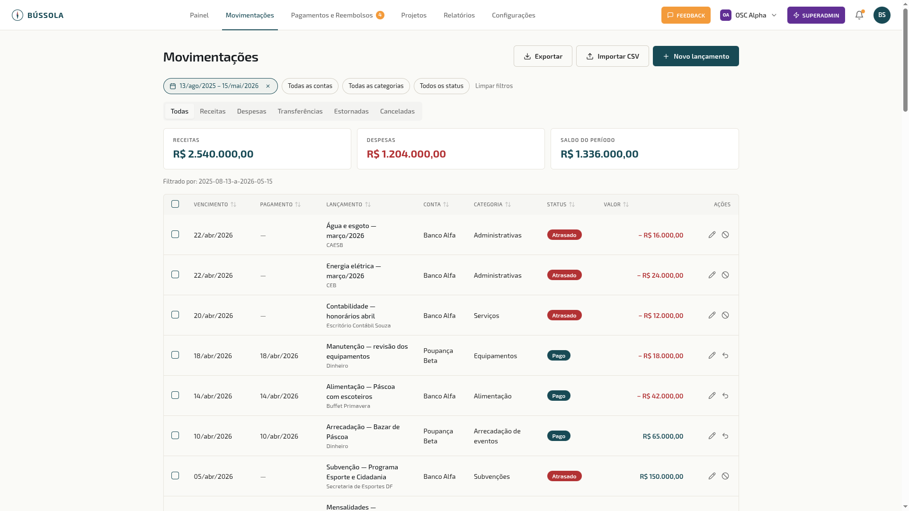
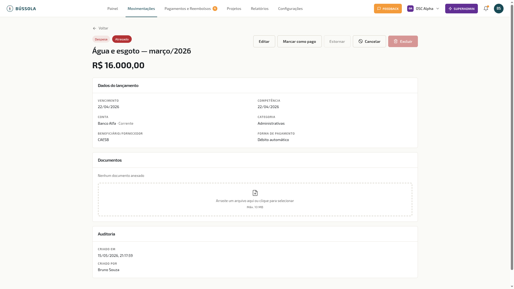
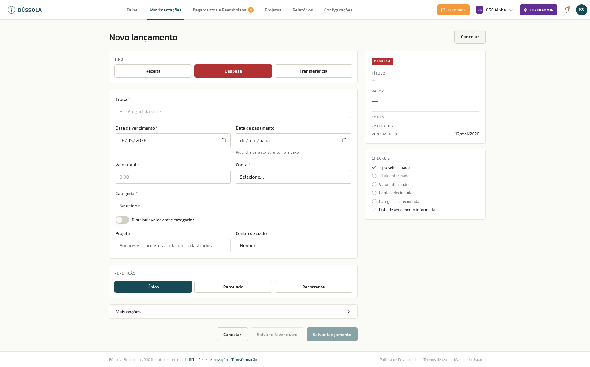

Movimentações Financeiras
O módulo de Movimentações é o coração do sistema. Aqui ficam registradas todas as receitas, despesas e transferências da organização.
Lista de movimentações

{kind=link}
A lista mostra todas as movimentações com as colunas: Vencimento, Pagamento, Lançamento (título e beneficiário), Conta, Categoria, Status e Valor.
Status possíveis:
| Status | Significado |
|---|---|
| 🟡 Pendente | Lançado, ainda não pago, dentro do prazo |
| 🔴 Atrasado | Data de vencimento passou sem pagamento |
| 🟢 Pago | Confirmado como pago |
| ⚪ Estornado | Movimento desfeito (valor revertido) |
| ⬛ Cancelado | Lançamento cancelado manualmente |
Abas por tipo
A lista tem abas para filtrar por tipo: Todas, Receitas, Despesas, Transferências, Estornadas e Canceladas.
Na barra inferior de cada aba aparecem os totais: receitas, despesas e saldo do período filtrado.
Filtros
Você pode filtrar por:
- Período (padrão: mês corrente — ao abrir a tela, só o mês atual aparece)
- Conta
- Categoria
- Status
Quando há filtros ativos, uma linha “Filtrado por: …” aparece abaixo dos totais. O botão Limpar filtros remove todos os filtros de uma vez.
Dica: Para ver movimentações de períodos anteriores, clique no filtro de Período e selecione o intervalo desejado.
Ordenação
Clique no cabeçalho de qualquer coluna para ordenar. Um segundo clique inverte a ordem; um terceiro remove a ordenação.
Ações por linha
Cada linha tem ícones de ação:
- ✏️ Editar — disponível para movimentações pendentes ou atrasadas
- ✕ Cancelar — disponível para pendente e atrasado
- ↩ Estornar — disponível para movimentações pagas
- 🗑 Excluir — disponível para canceladas e estornadas
Seleção em lote
Marque o checkbox no início de cada linha para selecionar múltiplas movimentações. A barra de ações em lote aparece no rodapé com as opções: Marcar como pago e Excluir.
Exportação
O botão Exportar permite exportar para:
- PDF — relatório formatado com cabeçalho, filtros ativos e totais
- Excel — planilha com todas as colunas
Detalhe de uma movimentação

{kind=link}
Clique em qualquer linha da lista para abrir o detalhe completo:
- Tipo e status (chips coloridos no topo)
- Título e valor em destaque
- Dados do lançamento: vencimento, competência, conta, categoria, beneficiário/fornecedor, forma de pagamento
- Documentos: comprovantes e notas fiscais anexados
- Auditoria: data de criação e nome de quem lançou
Para movimentações pendentes ou atrasadas, os botões disponíveis são: Editar, Marcar como pago, Estornar, Cancelar e Excluir (apenas canceladas/estornadas).
Registrar novo lançamento

{kind=link}
Clique em + Novo lançamento no topo da lista.
Campos obrigatórios:
- Tipo: Receita, Despesa ou Transferência
- Título: descrição breve do lançamento
- Data de vencimento
- Valor total
- Conta
- Categoria (não obrigatória para Transferências)
Campos opcionais:
- Data de pagamento — se preenchida, o lançamento já é salvo como “Pago”
- Projeto, Centro de custo
- Distribuir valor entre categorias — divide o valor por múltiplas categorias
Tipo de repetição:
- Único — lançamento avulso
- Parcelado — divide o valor em N parcelas
- Recorrente — cria uma série que se repete automaticamente (semanal, mensal, etc.)
A barra lateral direita mostra um checklist em tempo real dos campos preenchidos e um resumo antes de salvar.
Clique em Mais opções para acessar: forma de pagamento, beneficiário/pagador, referência bancária, número do documento fiscal, tags e observações.